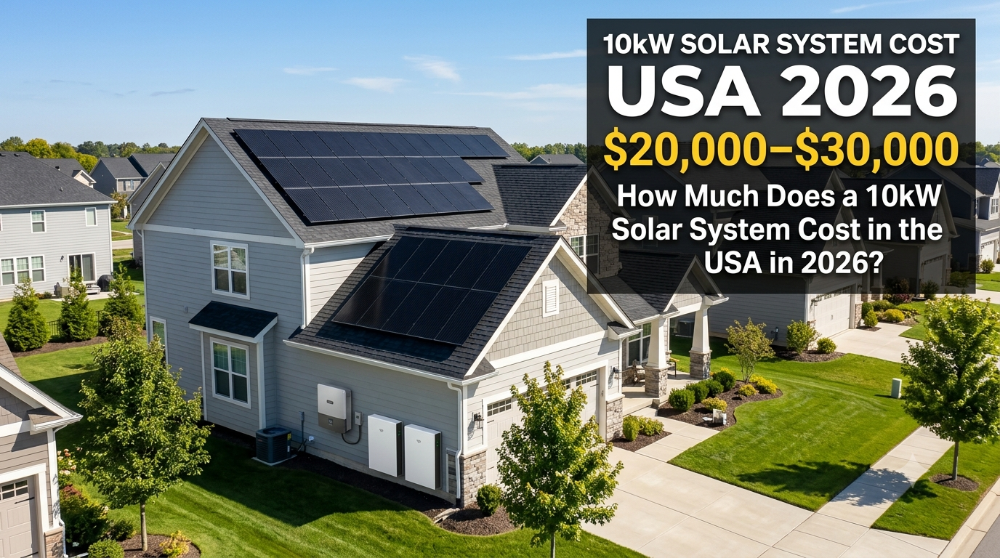

SolarRateHub
SolarRateHubUSA SOLAR SYSTEMS · August 29, 2026
How Much Does a 10kW Solar System Cost in the USA in 2026?
If you are researching solar for a larger home, a 10kW system is one of the most common sizes to consider. It can produce substantially more electricity than a small residential array, but the final project price depends on the panels, inverter, roof, electrical work, labor, permits and whether battery storage is included.

What does a 10kW solar system include?
A 10kW solar project is more than a stack of panels. A complete installation normally combines several pieces of equipment and professional work:
- Solar panels with a combined nameplate capacity around 10kW
- One or more inverters, depending on the system design
- Racking and roof attachment hardware
- DC and AC wiring, disconnects and electrical protection
- Monitoring equipment or software
- Labor, permitting, inspection and commissioning
- Potential electrical panel or service upgrades when required
The exact equipment mix varies between installers. Two systems with the same 10kW nameplate capacity can therefore have very different installed prices.
10kW solar system cost breakdown
| Cost area | What can change the price? |
|---|---|
| Solar panels | Brand, efficiency, warranty, wattage and availability |
| Inverter | String, microinverter or hybrid design; power and features |
| Racking | Roof type, attachment method, layout and wind requirements |
| Installation | Roof access, labor market, project complexity and crew rates |
| Electrical work | Panel upgrades, wiring runs, disconnects and service changes |
| Permits & inspection | Local authority requirements and project location |
| Battery storage | Capacity, backup hardware, installation and electrical integration |
This table explains the main cost drivers. It is not intended to assign a fixed dollar amount to each component.
How many solar panels are needed for 10kW?
The panel count depends on the wattage of the individual modules. For example, using 400-watt panels would require about 25 panels to reach 10kW of nameplate capacity. Using higher-wattage residential modules can reduce the panel count, while lower-wattage modules can increase it.
Roof space matters just as much as panel count. A 10kW design needs enough usable roof area with suitable orientation, limited shading and adequate structural condition. An installer should verify the roof before the final system is designed.
How much electricity can a 10kW system produce?
There is no single production number for every American home. Solar output changes with location, sunlight, roof orientation, tilt, shading, weather, equipment losses and system design.
A 10kW system in a sunny region can produce considerably more annual electricity than the same-size system in a location with lower solar resource. That is why homeowners should compare estimated annual production in kWh, rather than judging a proposal only by the 10kW label.
What about batteries with a 10kW solar system?
A battery is optional for many grid-connected solar projects, but it can change both the project cost and how the system operates. Storage can keep selected loads running during an outage, shift solar energy into the evening and increase the amount of generated electricity used on-site.
Battery pricing should be evaluated separately from the solar array. A proposal that looks inexpensive may exclude storage, backup equipment or electrical upgrades that another installer includes.
Can a 10kW system eliminate your electric bill?
It can substantially reduce electricity purchases, but a solar system does not automatically make every household's bill zero. The result depends on annual consumption, system production, utility rates, fixed charges, export compensation and the timing of electricity use.
Net-metering and other utility rules also vary by location. Before purchasing, check how your utility credits exported solar electricity and whether there are special requirements for interconnection.
What affects the final price in different states?
Solar is a local market. Labor costs, permitting, utility requirements, roof conditions, local competition, weather exposure and available incentives can all affect the installed price. Even neighboring cities can have different project economics.
Applicable federal, state, local and utility incentives also change over time and have eligibility rules. Treat any incentive shown in an online estimate as something to verify for your specific project rather than money that is automatically guaranteed.
How to compare 10kW solar quotes
- Compare the system size. Make sure each proposal is actually around 10kW.
- Compare annual production. Look at estimated kWh, not just the panel count.
- Check the inverter. Confirm model, capacity, warranty and whether it supports your intended configuration.
- Look for excluded costs. Ask whether permits, electrical upgrades, monitoring and structural work are included.
- Separate battery pricing. Compare solar-only and solar-plus-storage proposals independently.
- Read the warranty terms. Panel, inverter, workmanship and battery warranties can be different.
- Get a written contract. Avoid relying on a verbal price estimate.
Is a 10kW solar system worth it in 2026?
For a home with substantial electricity consumption and a suitable roof, a 10kW system can be a strong fit. The important question is not simply whether 10kW is a popular size. It is whether the system's expected production matches your home's long-term electricity needs and whether the installed price produces acceptable economics.
Use your recent utility bills, request several local proposals and compare the full installed scope. A professional site assessment is especially important if your roof is older, heavily shaded or likely to need electrical upgrades.
Bottom line
A 10kW solar system cost in the USA in 2026 may be roughly $20,000–$30,000 as a broad planning range, but actual project prices can be lower or higher. Equipment, installation, roof conditions, electrical work, local market conditions and battery storage all matter.
SolarRateHub recommends treating online prices as research starting points. Compare complete written proposals and confirm current local pricing before making a purchase.
More SolarRateHub: Solar Battery Prices in the USA 2026 · USA Solar Panel Prices 2026 · Solar Calculator
Frequently Asked Questions
How much does a 10kW solar system cost in the USA in 2026?
A broad planning range is about $20,000–$30,000 before applicable incentives. Actual installed prices vary by location, equipment, roof and electrical requirements.
How many panels make a 10kW solar system?
It depends on panel wattage. At 400 watts per panel, about 25 panels would total 10kW.
Does a 10kW solar system include a battery?
Not necessarily. Battery storage is usually a separate part of the project and can add significant cost depending on capacity and backup requirements.
Will a 10kW system cover my whole home's electricity use?
It depends on your annual electricity consumption and local solar production. Compare your utility usage in kWh with the installer's estimated annual production.
Disclaimer
All prices and production references in this article are educational planning estimates, not supplier quotations. Actual costs vary by state, installer, equipment, roof, electrical work, permitting, taxes, incentives and project design. Verify current local pricing and incentive eligibility before purchasing.